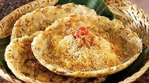
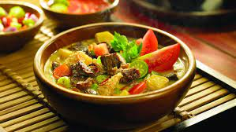

Tentang Kuliner Nusantara Khas DKI Jakarta
1. Kerak Telor
Siapa yang tak kenal dengan makanan khas Jakarta yang satu ini? Saat ini, kerak telor identik dengan perayaan ulang tahun Jakarta, dimana banyak sekali penjual kerak telor yang dapat ditemukan di Pekan Raya Jakarta (PRJ).
Kerak telor sendiri adalah makanan yang terbuat dari telur (bisa ayam atau bebek, tergantung selera), beras, dan serundeng. Kerak telor sering kali dianggap sebagai makanan yang sangat unik. Hal ini dikarenakan proses pembuatannya yang menggunakan arang. Beras akan dimasak di atas tungku arang hingga menjadi aronan nasi.
Kemudian, aron nasi tersebut akan dicampur dengan telur bebek atau ayam dan diaduk rata beserta dengan bumbu pendukung lain. Seperti garam, lada, dan penyedap rasa. Setelah aron nasi dan telur tercampur dengan sempurna, aron nasi tersebut akan dibuat lebar agar kerak telornya bisa matang dengan sempurna di atas arang.
Setelah dipanggang di atas arang, kerak telor akan berwarna kecoklatan. Setelah proses masak selesai, kerak telor akan disajikan dengan serundeng kelapa yang di taburi di atas kerak telor tersebut. Tak lupa juga dengan taburan bawang goreng yang menjadi pelengkap dari topping kerak telor ini.
Kerak telor memiliki nama “kerak” karena aron nasi yang dimasak bersama telur berbentuk seperti kerak nasi yang ada saat nasi menjadi kering. Tekstur dan warnanya menyerupai kerak nasi yang biasanya menjadi keras dan berwarna kuning.
2. Soto Betawi
Makanan berikutnya yang menjadi makanan khas ibukota Jakarta adalah soto betawi. Berbeda bedangan soto pada umumnya. Soto betawi memiliki ciri khas pada kuah santannya pekat dan gurih.
Soto betawi biasanya memiliki isian daging sapi, jeroan sapi, dan juga kikil. Soto betawi ada juga yang menggunakan daging ayam. Sebenarnya, walaupun isian dari soto ini digantikan dengan daging atau topping lain, asalkan kuahnya adalah kuah santan yang kental dan gurih. Ini tetap soto betawi.
Namun, banyak sekali yang memodifikasi kuah dari soto betawi ini. Beberapa diantara masyarakat setempat memodifikasi atau menggantikan penggunaan santan kelapa menjadi susu sapi. Meskipun keduanya berbeda, tetapi rasa kuah yang dihasilkan sama-sama memiliki cita rasa yang sangat kuat dan unik.
Makanan pendamping dari soto betawi adalah nasi pulih yang hangat. Soto betawi juga tak lengkap tanpa sambal, jeruk limau, irisan daun bawang, bawang goreng, dan yang paling utama, yakni emping.